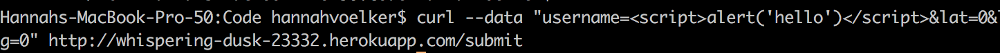
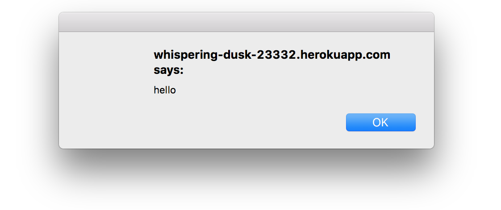
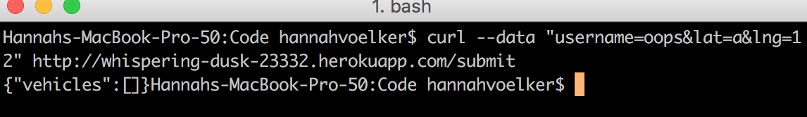
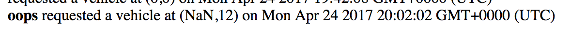
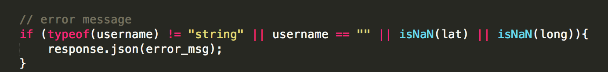
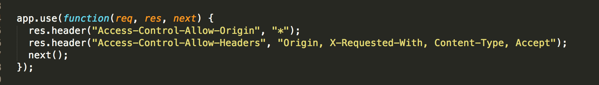
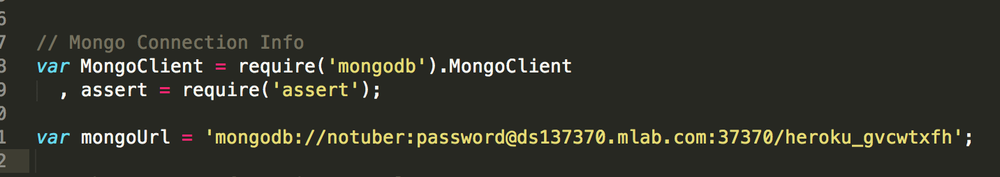

Security Check
Introduction
The purpose of my work is to find (at least) three vulnerabilities in Ian's site. This is to help demonstrate how easy it is to create an insecure web app, and to keep things in mind in the future when building sites.
Methodology
First, I took a look at both the client side and the server side code to see if I could find errors just by inspection. Then, using the various security vulnerabilities I was aware of, I tried to "hack" Ian's site.
Abstract of Findings
The issues in this application vary. Of course, there is the potential for cross site scripting as we were told to intentionally not remove characters in the submit api. Just by inspecting the code, I was able to find a few issues in the code that would be a security flaw, including: allowing NaN submissions to be posted, allowing all origin access, and having the database password in the code. All of these vulnerabilities are discussed in further detail below.
Issues Found
- Issue: Cross Site Scripting in POST/submit.
- Location: This occurs in index.js in the api endpoint for POST/submit.
- Severity: High. It is easy to perform and abuse if not fixed. I simply did an alert box, but it could be much worse-- someone could inject a much worse script that could potentially comprimise the site.
- I performed the attack by using curl, and it works when you attempt to render the front page. Images below.


- Recommendations: remove the ability for the data to be interpreted as code by removing the angle brackets and replacing with the encoded lt/gt before entering into the database.
- Issue: No validation of lat/lng.
- Location: This occurs in index.js in the api endpoint for POST/submit.
- Severity: Small. It can easily be fixed, and since it attempts to parse an input to a float, it renders NaN in the application. This would be bad if it were a real product, since someone could send letters rather than numbers to "hide" their location, but instead of getting an error message, they get either vehicles or passengers. This means they could potentially access data they weren't supposed to while successfully hiding origin.
- I noticed that all of Ming's tests showed up, some of which had a lat/lng of NaN, so I decided to try and successfully was able to return a vehicles array.


- Recommendations: After parsing your inputs to floats, check to see if any are NaN and return the error message. eg:

- Issue: Access Control Allow Origin: *
- Location: This occurs in index.js, as it enables CORS for all api enpoints.
- Severity: Medium -- This allows sharing with any origin. To quote from SO, "If you have something implemented like an authentication or authorization scheme that is based on something that is automatically provided by the browser (cookies, cookie-based sessions, etc.), the requests triggered by the third party sites will use them, too." [1] This could cause a third party to have access to data (eg, location) that you may not want it to have access to.
- I found this by knowing it was a potential vulnerability and looked at index.js to see if it was there.

- Recommendations: Only allow from trusted sites and not enable CORS for everyone.
- Issue: mongoDB password in code
- Location: In the index.js.
- Severity: High. If for some reason the server side code was exposed to a third party, all of the mongoDB data is now comprimised. From what I understand passwords/tokens should never be in code, so this is bad.
- I was reading the code and saw the password and thought "hm.. this probably shouldnt be here."

- Recommendations: get the password out of the code. The script shouldnt have to be authorizing access to the database, as the connections are made in heroku.
Conclusion
When writing the heroku app for the assignment, it is likely that security was not kept in mind. There are quite a few design flaws that allow for shortcuts in functionality of the application, but comprimise security. These four flaws are easily fixable by sanitizing the app and ensuring that a third party has no way to access user data.
References
- Why * is bad for CORS || Stack Overflow